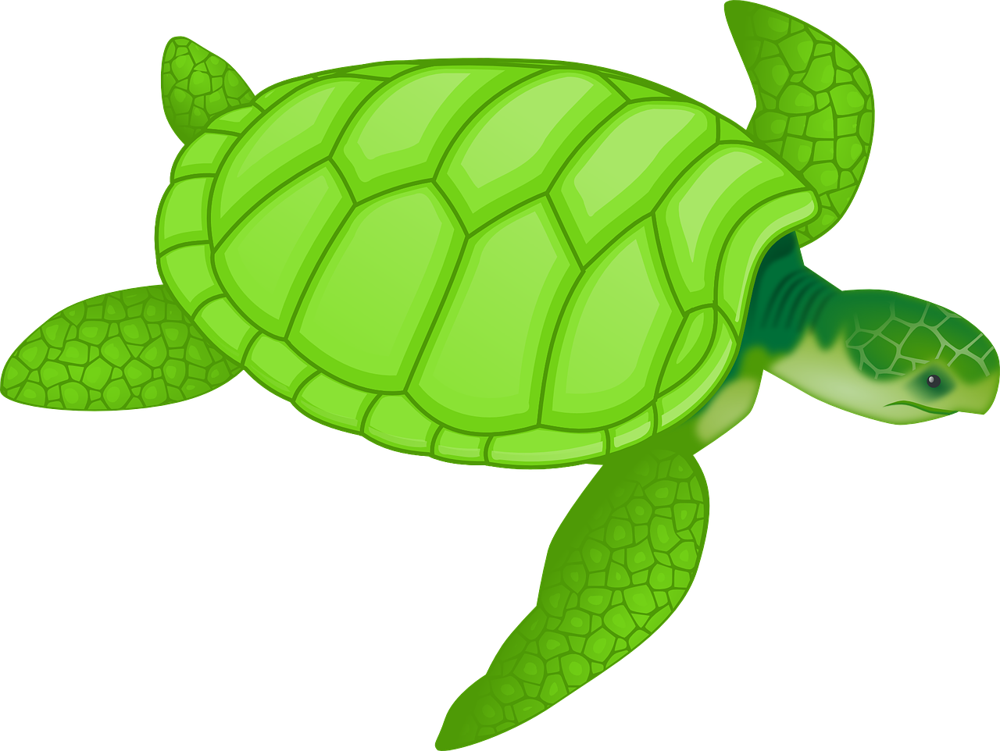
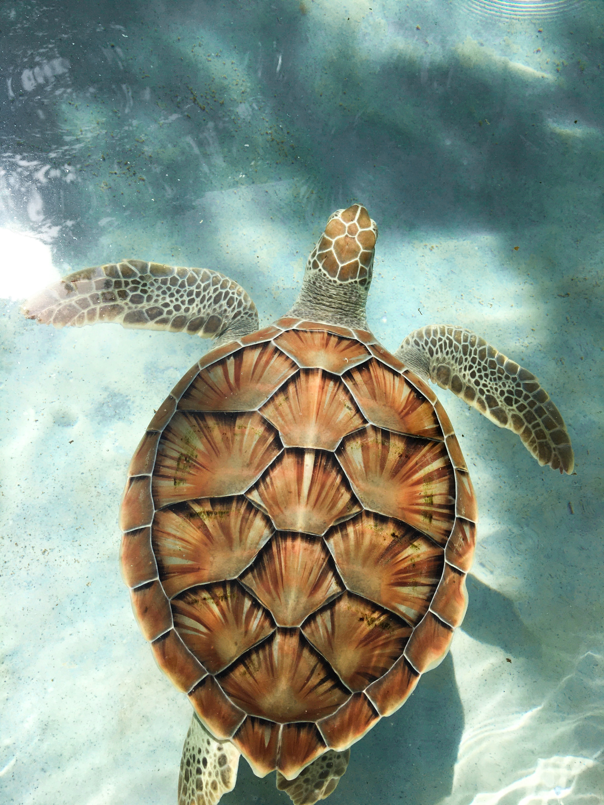

Turtle Basics
Want to know the basics about turtles? Learn here!

Turtles are an amphibious reptile distinguished by a large outer shell on the creatures back. There are more the 300 species of turtle worldwide, some dwelling on land and some in the sea.
Turtle Variants
Sea Turtles aren't the only Turtles you know...
Snapping turtles are distinguished by their strong jaws and killer biting force. Another type of turtles are tortoises, which dwell on land and are incapable of swimming. Tortoises are typically heavier than sea turtles and have a less sleek shell that protrudes farther upwards.
About Me

I am a turtle enthusiast. I think turtles are pretty gosh darn cool.
My Favorite Pictures


Follow Me
You really should though, it would be pretty cool.